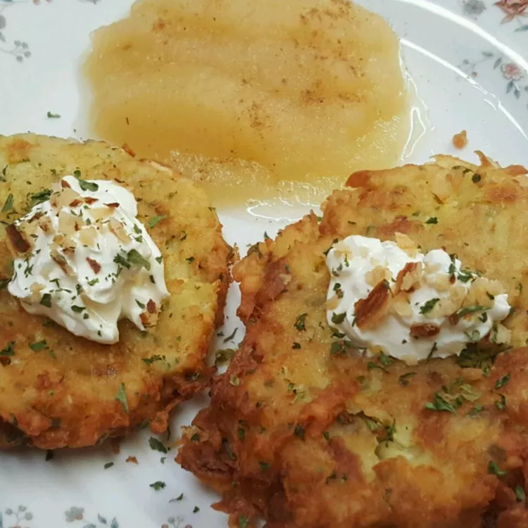

German Potato Pancakes

Description
These German potato pancakes are a nice change from regular pancakes. They make a great dinner meal when served with Bratwurst sausage
I spread mine with cranberry sauce and top with marple sirup
Ingredients
- 2 large eggs
- 2 tbsp all-purpose flour
- ¼ tsp baking powder
- ½ tsp salt
- ¼ tsp pepper
- 6 medium potatoes, peeled and shredded
- ½ cup finely chopped onion
- ¼ cup vegetable oil
Steps
- Beat eggs, flour, baking powder, salt and pepper together in a large bowl, stir in potatoes and onions.
- Heat oil in a large skillet over medium heat. Drop heaping tablespoonfuls of potato mxiture into hot oil in batches
Press to flatten. Cook until browned and crisp, about 3 minutes on each side. Transfer to a paper towel-lined plate to drain
Repeat with remaining potato mixture.